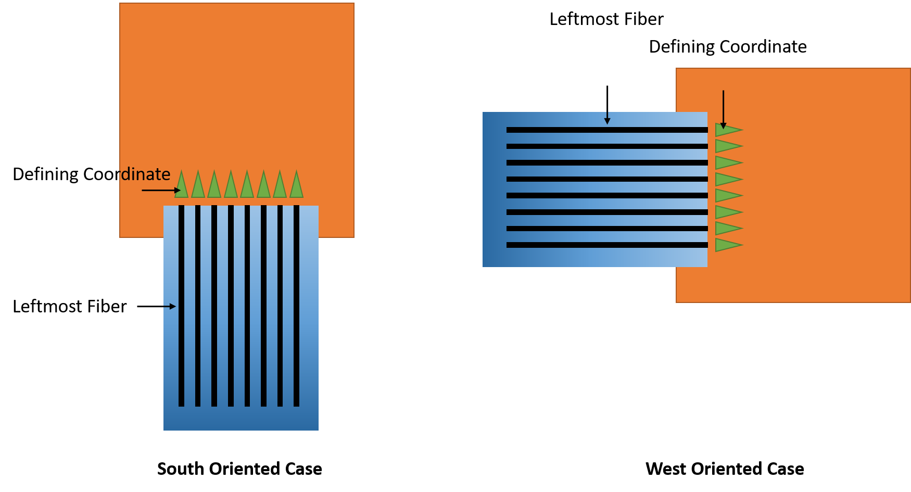

Writing a Coordinate File¶
Structures on chip are defined by the 2 dimensional coordinates of the IO ports, no matter whether the ports are electrical or optical.
Each structure must be listed on the coordinates files a basic entry would be:
## Structure Name
BSplit3
#OW
1.850477 1.513309
#OE
1.765477 1.19150
##
Each structure must be confined within a set of two ##. The Structure Name will be used to in ProberControl to refer to this structure. To define the stage for an optical stages oriented in the West a first line #OW is followed by the coordinates x and y. An electrical stage on the north would be defined as #EN, etc. Although internally the ProberControl has dedicated coordinate systems for each stage (see figure) the coordinates file always refers to the chip coordinate system which is the same as a south oriented stage.
{kind=link}
Note that the y axis is reversed compared to an intuitive coordinate system.
Coordinates for fiber arrays or multi-channel probes should always reference the left-most (when looking along the device) channel of the device:
{kind=link}
When a structure is connected the system will try to fine align the optical probes using a feedback loop. The feedback loop in and outputs are defined as follows:
#FeedbackIn
Current:0.001,EN:1
#FeedbackOut
Power,OW:8
#Continuous
True
In this example a DC Source is used to source 1 mA of current into port 1 of the electrical probe in the north. The signal is picked up on the optical probe in the west on fiber 8 and the measured power is used as a the feedback signal. The #Continous True makes the system continously optimize its position as apposed to optimize only once.
Options for the input are:
#FeedbackIn
Current:0.001,EN:1
#FeedbackIn
Power:1550,OW:1
where the second options defines a laser light at a 1550 nm wavelength supplied at optical probe in the west on fiber 1.
Options for the output are:
#FeedbackOut
Power,OW:8
#FeedbackOut
Current,ES:2